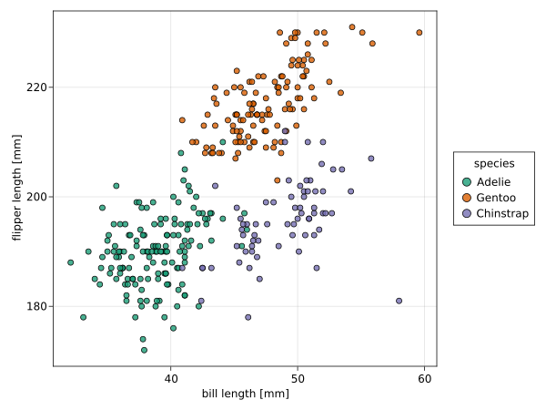
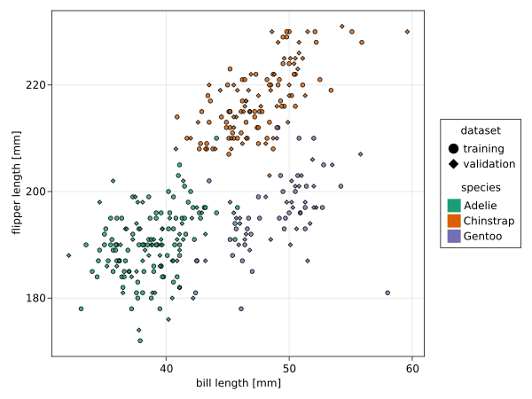
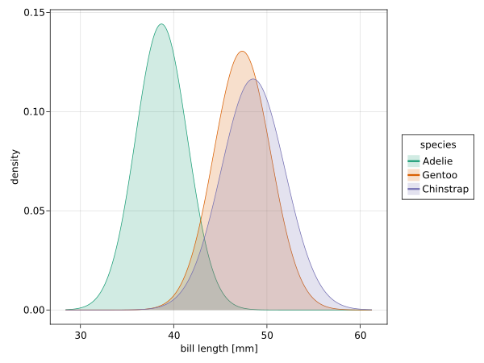
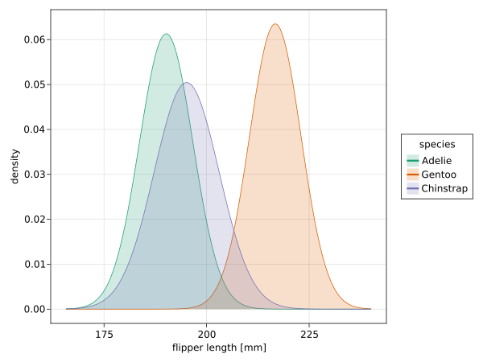

Classification of penguin species

You are seeing the HTML output generated by Documenter.jl and Literate.jl from the Julia source file. The corresponding notebook can be viewed in nbviewer.
Packages
using CairoMakie
using CalibrationErrors
using DataFrames
using Distances
using Distributions
using PalmerPenguins
using Query
using Random
using CairoMakie.AbstractPlotting.ColorSchemes: Dark2_8Data
In this example we study the calibration of different models that classify three penguin species based on measurements of their bill and flipper lengths.
We use the Palmer penguins dataset to to train and validate the models.
penguins = dropmissing(DataFrame(PalmerPenguins.load()))
f = Figure()
ax = Axis(f[1, 1]; xlabel="bill length [mm]", ylabel="flipper length [mm]")
for (i, (key, df)) in enumerate(pairs(groupby(penguins, :species)))
scatter!(
df.bill_length_mm, df.flipper_length_mm; color=(Dark2_8[i], 0.8), label=key.species
)
end
Legend(f[1, 2], ax, "species")
save("./figures/penguins.svg", f);
We split the data randomly into a training and validation dataset. The training dataset contains around 60% of the samples.
Random.seed!(1234)
idxs = shuffle(axes(penguins, 1))
k = floor(Int, 0.6 * length(idxs))
train_idxs = @view idxs[1:k]
val_idxs = @view idxs[(k + 1):end]
train_penguins = penguins[train_idxs, :]
val_penguins = penguins[val_idxs, :];f = Figure()
ax = Axis(f[1, 1]; xlabel="bill length [mm]", ylabel="flipper length [mm]")
for (i, df) in enumerate((train_penguins, val_penguins))
for (j, (key, subdf)) in enumerate(pairs(groupby(df, :species)))
scatter!(
subdf.bill_length_mm,
subdf.flipper_length_mm;
color=(Dark2_8[j], 0.8),
marker=i == 1 ? :circle : :diamond,
)
end
end
group_marker = [
MarkerElement(; marker=m, color=:black, strokecolor=:transparent, markersize=20) for
m in (:circle, :diamond)
]
group_color = [PolyElement(; color=Dark2_8[i], strokecolor=:transparent) for i in 1:3]
Legend(
f[1, 2],
[group_marker, group_color],
[["training", "validation"], string.(levels(penguins.species))],
["dataset", "species"],
)
save("./figures/penguins_datasets.svg", f);
Fitting normal distributions
For each species, we fit independent normal distributions to the observations of the bill and flipper length in the training data, using maximum likelihood estimation.
penguins_fit = @from i in train_penguins begin
@group i by i.species into g
@select {
species = key(g),
proportion = length(g) / nrow(train_penguins),
bill = fit(Normal, g.bill_length_mm),
flipper = fit(Normal, g.flipper_length_mm),
}
@collect DataFrame
end| species | proportion | bill | flipper | |
|---|---|---|---|---|
| String | Float64 | Normal… | Normal… | |
| 1 | Adelie | 0.462312 | Distributions.Normal{Float64}(μ=38.6891, σ=2.76643) | Distributions.Normal{Float64}(μ=190.152, σ=6.50908) |
| 2 | Gentoo | 0.356784 | Distributions.Normal{Float64}(μ=47.3479, σ=3.05664) | Distributions.Normal{Float64}(μ=216.746, σ=6.28371) |
| 3 | Chinstrap | 0.180905 | Distributions.Normal{Float64}(μ=48.5194, σ=3.42481) | Distributions.Normal{Float64}(μ=195.139, σ=7.90974) |
We plot the estimated normal distributions.
function xrange(dists, alpha=0.0001)
xmin = minimum(Base.Fix2(quantile, alpha), dists)
xmax = maximum(Base.Fix2(quantile, 1 - alpha), dists)
return range(xmin, xmax; length=1_000)
end
function plot_normal_fit(dists, species, xlabel)
f = Figure()
Axis(f[1, 1]; xlabel=xlabel, ylabel="density")
xs = xrange(dists)
plots = map(enumerate(dists)) do (i, dist)
ys = pdf.(dist, xs)
l = lines!(xs, ys; color=Dark2_8[i])
b = band!(xs, 0, ys; color=(Dark2_8[i], 0.2))
return [l, b]
end
Legend(f[1, 2], plots, species, "species")
return f
end
plot_normal_fit(penguins_fit.bill, penguins_fit.species, "bill length [mm]")
save("./figures/normal_fit_bill.svg", current_figure());
plot_normal_fit(penguins_fit.flipper, penguins_fit.species, "flipper length [mm]")
save("./figures/normal_fit_flipper.svg", current_figure());
Naive Bayes classifier
Let us assume that the bill and flipper length are conditionally independent given the penguin species. Then Bayes' theorem implies that
\[\begin{aligned} \mathbb{P}(\mathrm{species} \,|\, \mathrm{bill}, \mathrm{flipper}) &= \frac{\mathbb{P}(\mathrm{species}) \mathbb{P}(\mathrm{bill}, \mathrm{flipper} \,|\, \mathrm{species})}{\mathbb{P}(\mathrm{bill}, \mathrm{flipper})} \\ &= \frac{\mathbb{P}(\mathrm{species}) \mathbb{P}(\mathrm{bill} \,|\, \mathrm{species}) \mathbb{P}(\mathrm{flipper} \,|\, \mathrm{species})}{\mathbb{P}(\mathrm{bill}, \mathrm{flipper})}. \end{aligned}\]
This predictive model is known as naive Bayes classifier.
In the section above, we estimated $\mathbb{P}(\mathrm{species})$, $\mathbb{P}(\mathrm{bill} \,|\, \mathrm{species})$, and $\mathbb{P}(\mathrm{flipper} \,|\, \mathrm{species})$ for each penguin species from the training data. For the conditional distributions we used a Gaussian approximation.
function predict_naive_bayes_classifier(fit, data)
# Compute unnormalized probabilities
z =
log.(permutedims(fit.proportion)) .+
logpdf.(permutedims(fit.bill), data.bill_length_mm) .+
logpdf.(permutedims(fit.flipper), data.flipper_length_mm)
# Normalize probabilities
u = maximum(z; dims=2)
z .= exp.(z .- u)
sum!(u, z)
z ./= u
return DataFrame(z, fit.species)
end
train_predict = predict_naive_bayes_classifier(penguins_fit, train_penguins)
val_predict = predict_naive_bayes_classifier(penguins_fit, val_penguins);Evaluation
We evaluate the probabilistic predictions of the naive Bayes classifier that we just trained. It is easier to work with a numerical encoding of the true penguin species and a corresponding vector of predictions.
train_species = convert(Vector{Int}, indexin(train_penguins.species, names(train_predict)))
train_probs = RowVecs(Matrix{Float64}(train_predict))
val_species = convert(Vector{Int}, indexin(val_penguins.species, names(val_predict)))
val_probs = RowVecs(Matrix{Float64}(val_predict));Log-likelihood
We compute the average log-likelihood of the training and validation data. It is equivalent to the negative cross-entropy.
function mean_loglikelihood(species, probs)
return mean(log(p[s]) for (s, p) in zip(species, probs))
end
mean_loglikelihood(train_species, train_probs)-0.17256012868504889
mean_loglikelihood(val_species, val_probs)-0.14178608137216686
Brier score
The average log-likelihood is also equivalent to the logarithmic score. The Brier score is another strictly proper scoring rule that can be used for evaluating probabilistic predictions.
function brier_score(species, probs)
return mean(
sum(abs2(pi - (i == s)) for (i, pi) in enumerate(p)) for
(s, p) in zip(species, probs)
)
end
brier_score(train_species, train_probs)0.09151465062557913
brier_score(val_species, val_probs)0.07692851868300807
Expected calibration error
As all proper scoring rules, the logarithmic and the Brier score can be decomposed in three terms that quantify the sharpness and calibration of the predictive model and the irreducible uncertainty of the targets that is inherent to the prediction problem. The calibration term in this decomposition is the expected calibration error (ECE)
\[\mathbb{E} d\big(P_X, \mathrm{law}(Y \,|\, P_X)\big)\]
with respect to the score divergence $d$.
Scoring rules, however, include also the sharpness and the uncertainty term. Thus models can trade off calibration for sharpness and therefore scoring rules are not suitable for specifically evaluating calibration of predictive models.
The score divergence to the logarithmic and the Brier score are the Kullback-Leibler (KL) divergence
\[d\big(P_X, \mathrm{law}(Y \,|\, P_X)\big) = \sum_{y} \mathbb{P}(Y = y \,|\, P_X) \log\big(\mathbb{P}(Y = y \,|\, P_X) / P_X(\{y\})\big)\]
and the squared Euclidean distance
\[d\big(P_X, \mathrm{law}(Y \,|\, P_X)\big) = \sum_{y} \big(P_X - \mathrm{law}(Y \,|\, P_X)\big)^2(\{y\}),\]
respectively. The KL divergence is defined only if $\mathrm{law}(Y \,|\, P_X)$ is absolutely continuous with respect to $P_X$, i.e., if $P_X(\{y\}) = 0$ implies $\mathbb{P}(Y = y \,|\, P_X) = 0$.
We estimate the ECE by binning the probability simplex of predictions $P_X$ and computing the weighted average of the distances between the mean prediction and the distribution of targets in each bin.
One approach is to use bins of uniform size.
ece = ECE(UniformBinning(10), (μ, y) -> kl_divergence(y, μ))
ece(train_probs, train_species)0.06734377731547585
ece(val_probs, val_species)0.0357151309862163
For the squared Euclidean distance we obtain:
ece = ECE(UniformBinning(10), SqEuclidean())
ece(train_probs, train_species)0.023481249069090715
ece(val_probs, val_species)0.014088367573456663
Alternatively, one can use a data-dependent binning scheme that tries to split the predictions in a way that minimizes the variance in each bin.
With the KL divergence we get:
ece = ECE(MedianVarianceBinning(5), (μ, y) -> kl_divergence(y, μ))
ece(train_probs, train_species)0.07499919743918855
ece(val_probs, val_species)0.02139440771337293
For the squared Euclidean distance we obtain:
ece = ECE(MedianVarianceBinning(5), SqEuclidean())
ece(train_probs, train_species)0.020821939141060335
ece(val_probs, val_species)0.0043922685321516565
We see that the estimates (of the same theoretical quantity!) are highly dependent on the chosen binning scheme.
Kernel calibration error
As an alternative to the ECE, we estimate the kernel calibration error (KCE). We keep it simple here, and use the tensor product kernel
\[k\big((\mu, y), (\mu', y')\big) = \delta_{y,y'} \exp{\bigg(-\frac{{\|\mu - \mu'\|}_2^2}{2\nu^2} \bigg)}\]
with length scale $\nu > 0$ for predictions $\mu,\mu'$ and corresponding targets $y, y'$. For simplicity, we estimate length scale $\nu$ with the median heuristic.
distances = pairwise(SqEuclidean(), train_probs)
λ = sqrt(median(distances[i] for i in CartesianIndices(distances) if i[1] < i[2]))
kernel = (GaussianKernel() ∘ ScaleTransform(inv(λ))) ⊗ WhiteKernel();We obtain the following biased estimates of the squared KCE (SKCE):
skce = BiasedSKCE(kernel)
skce(train_probs, train_species)0.00019771243779825737
skce(val_probs, val_species)0.0001799014357104042
Similar to the biased estimates of the ECE, the biased estimates of the SKCE are always non-negative. The unbiased estimates can be negative as well, in particular if the model is (close to being) calibrated:
skce = UnbiasedSKCE(kernel)
skce(train_probs, train_species)-0.0002634842197157877
skce(val_probs, val_species)-0.00039715583682566714
When the datasets are large, the quadratic sample complexity of the standard biased and unbiased estimators of the SKCE can become prohibitive. In these cases, one can resort to an estimator that averages estimates of non-overlapping blocks of samples. This estimator allows to trade off computational cost for increased variance.
Here we consider the extreme case of blocks with two samples, which yields an estimator with linear sample complexity:
skce = BlockUnbiasedSKCE(kernel, 2)
skce(train_probs, train_species)-0.0019950778379260034
skce(val_probs, val_species)-0.0008908675271914782
This page was generated using Literate.jl.